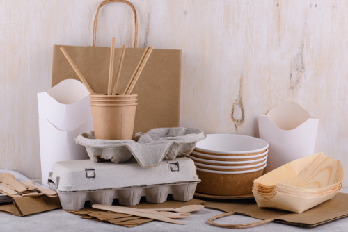

SUCCESS STORIES
Cruz Foam: Shrimp Shells and More for Sustainable Packaging
Cruz Foam, co-founded by John Felts and Marco Rolandi, started as a project to create a bio-foam material for surfboards. They discovered the potential of chitin, sourced primarily from shrimp shells, to replace petroleum-based foam. By treating shrimp shells with an alkaline solution and converting them into chitosan, they created a bio-benign material with similar technical specs to traditional foam.
Cruz Foam has developed packaging solutions that are curbside recyclable and compostable, aligning with the practices of mainstream consumers. The company is working with partners to improve waste collection and disposal systems. With investments from notable figures like Leonardo DiCaprio and Ashton Kutcher, Cruz Foam is already making an impact in the packaging industry.